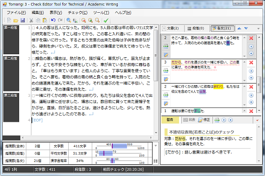

Tomarigiとは
Tomarigiは，作成した文章表現を改善していく際の気づきを誘発することを目的とた校正・推敲支援ツールです．入力された文章を解析することで，誤り候補を抽出し，ユーザーに指摘を行うとともに，可能であれば修正候補などを表示します．

本ツールでは，文を1文ずつ切り分け，形態素解析・係り受け解析を行い，その結果をプラグイン形式の校正・推敲チェック機能により，指摘箇所を抽出します．このプラグインは，同梱のsaezuriライブラリを用いることで，誰でも(プログラミングの心得があれば)開発することができ，独自の校正・推敲機能を追加することができます(C#での開発のみ想定)．
このツールでは，いくつかの外部ツールを別途利用しています．動作環境をご覧ください．
動作環境
| 必須 | |
| OS | Windows 7 (or XP以降※1) |
| .NET Framework | 3.5以上 |
| 形態素解析ツール | Mecab v0.98 |
| 係り受け解析ツール | Cabocha v0.60 |
| ※1 .NET Framework 3.5以上同梱に限る | |
| 任意 | |
| 音声合成ツール※2 | Microsoft Speech Platform - Server Runtime |
| ※2 読み上げを利用する場合のみ必要 | |
Install / Uninstall
Install
※Tomarigiを起動した後のヘルプメニューの「自然言語解析ツールの確認」および「音声利用の確認」にも，案内があります．
- 専用サイトから最新の.NET Frameworkをダウンロードするか，Windows Updateで導入する．
-
専用サイトからmecab-0.98.exeをダウンロードし，インストールする．
※デフォルトのインストールオプションにて(文字コードは，Shift_JIS) -
専用サイトからCacboha 0.60をダウンロードし，インストールする．
※デフォルトのインストールオプションにて(文字コードは，Shift_JIS) - 読み上げ機能を利用する場合は，x86/SpeechPlatformRuntime.msiとMSSpeech_TTS_ja-JP_Haruka.msiをダウンロードし，インストールする．
- zip形式で配布されているTomarigiを適当な個所に解凍し，Tomarigi3.exeを実行して，使用を開始する．
Uninstall
Tomarigi自体は，解凍して作成されたフォルダごと削除して下さい．レジストリ等の変更は，一切していません．その他のツールに関しては，コントロールパネルの「プログラムのアンインストール」等から，削除して下さい．
saezuriとは
saezuriは，Tomarigi用のプラグインを作成するためのライブラリで，自然言語解析支援と校正・推敲機能を提供するための雛型が含まれています．
自然言語解析支援としては，以下の既存の解析ツールに対応しています．ただし，Tomarigi用プラグインとしては，MecabとCabochaのみサポートしています(他のツールを併用することは可能ですが，プラグイン内の処理にて，独自に別の自然言語解析ツールを使用する必要があります)．
- 形態素解析ツール： Mecab v0.98
- 形態素解析ツール： Juman v6.0
- 形態素解析ツール： Yahoo日本語形態素解析 v1
- 係り受け解析ツール： Cabocha 0.60
- 係り受け解析ツール： KNP 3.01
- 係り受け解析ツール： Yahoo日本語係り受け解析 v1
校正・推敲機能を提供するひな形としては，Tomarigi本体から利用されるためのプラグインインターフェースを提供します．
動作環境
| 必須 | |
| OS | Windows 7 (or XP以降※1) |
| .NET Framework | 3.5以上 |
| 開発ソフト(推奨) | Visual Studio 2010 C# |
| 形態素解析ツール | Mecab v0.98 |
| 係り受け解析ツール | Cabocha v0.60 |
| ※1 .NET Framework 3.5以上同梱に限る | |
| 任意 | |
| 形態素解析ツール | JUMAN v6.0 |
| 形態素解析ツール | Yahoo日本語係り受け解析※2 v1 |
| 係り受け解析ツール | KNP 3.01 |
| 係り受け解析ツール | Yahoo日本語係り受け解析※2 v1 |
| ※2 Yahoo!デベロッパーネットワークより，アプリケーションIDの取得が必要 | |
Install / Uninstall
Install
-
Tomarigiを使用する際は，すでに同梱済みのためインストール作業は不要．
プラグイン開発に利用する場合は，次の手順も行う． - Visual Studio 2010 C#において，クラスライブラリプロジェクトを作成し，bin\Debugフォルダ内に，saezuri.dllを配置する．
- プロジェクトの参照設定から，saezuri.dllを追加する．
- 必要に応じて，saezuri.xmlをsaezuri.dllと同じフォルダにコピーする．saezuri.xmlがあると，開発時にメソッドやプロパティの説明が出る．
Uninstall
saezuri.dllをそのまま削除して下さい．また，saezuri.xmlを使用した場合は，それも合わせて削除して下さい．